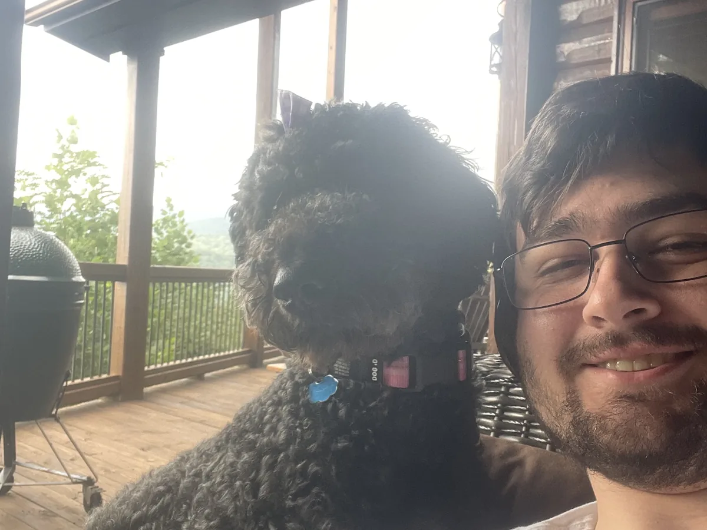
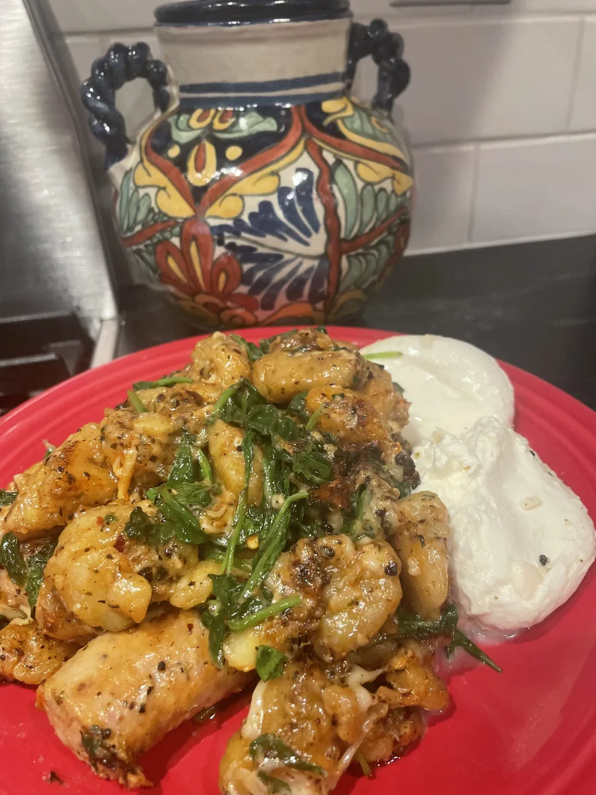
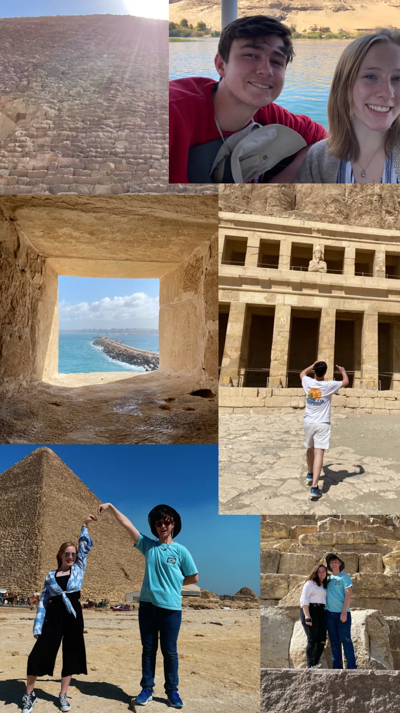

About
Jack McGuire
Ph.D. student in physics, astronomy concentration, at the University of Wyoming, and a graduate teaching assistant in the Department of Physics & Astronomy. I got here by way of Georgia State, a lot of spectra, and one very persistent question about barium.

Where I am
Laramie, since August 2026
I started my Ph.D. at the University of Wyoming in August 2026, in physics with an astronomy concentration. Alongside coursework and research I work as a graduate teaching assistant, supporting undergraduate physics and astronomy instruction through lab and recitation teaching, grading, office hours, and one-on-one help.
Teaching turns out to be the fastest way to find the soft spots in your own understanding. A student asking why the small-angle approximation is allowed here but not there is doing me a favour.
How I got here
I finished an Associate of Science in Physics with High Honors at Georgia State University in 2024 and a Bachelor of Science in Physics there in May 2026. The research started in earnest in the summer of 2025 as a Raghavan Fellow with Dr. Russel J. White, working on barium-dwarf binary evolution and CHARA interferometry at the same time, two projects that turned out to be the same project viewed from different angles.
That work continued through my final undergraduate year and became the manuscript I am now preparing. In parallel I worked with Dr. Xiaochun He and Dr. Viacheslav Sadykov on cosmic-ray detection and space weather, which is where I learned that building the instrument teaches you things reading about the instrument does not.
What I care about scientifically
Binary evolution and chemically peculiar stars, mostly: the chemical and dynamical fingerprints left behind when one star dumps material onto another. Around that: white dwarfs, stellar interferometry and the fundamental properties of low-mass stars, stellar atmospheres, and increasingly the data systems that make time-domain astronomy tractable. Astrobiology has never quite let go of me either.

Science communication
Explaining it is part of the job
Public funding, public interest, public benefit: none of it survives if we only talk to each other.
APS Advocacy Champion
Science-policy and advocacy training with the American Physical Society, plus coordinated outreach supporting research funding, STEM education and the physics workforce. A lot of it is simply building durable relationships with elected officials and their staff so the conversation is already open when it matters.
Hello SciCom: Comedy Camp for Science
An eight-week virtual program on using humor, storytelling and performance to communicate technical research without distorting it. I am developing a three-minute public talk and contributing to a study on how humor affects trust and engagement with science.
Posters at the Georgia State Capitol
Selected to represent the Georgia State University Department of Physics & Astronomy, presenting the CHARA Array and gLOWCOST muon-monitoring work to legislators and the public.
Perimeter SPACE Club
As secretary, I coordinated elementary-school outreach built around physics demonstrations and virtual-reality tours of experiments and operations aboard the International Space Station.
Vertigo Pinball
Startup consultant and manager: industry research, profit-and-loss projections, machine lineup and floor layout. I founded and ran the Georgia Pinball Museum initiative, whose interactive exhibits served hundreds of guests a day in the summers of 2023 and 2024, and later led production and flavour development for Blue Ridge Gourmet Popcorn.
Teaching people to swim
Assistant head swim coach at the Huntcliff Club for swimmers aged 4 to 18, then an instructor at British Swim School teaching everyone from infants to adults. Both are essentially the same skill as teaching a lab section: meet people where they are, then move the goalposts one step.
Camp-Run-A-Mutt
Caring for 5 to 25 dogs at a cage-free day and overnight boarding facility. Excellent preparation for managing competing priorities that all bark at once.
Eagle Scout
Troop 463. My project was a landscape redesign for Mount Vernon Presbyterian Church, which meant planning, fundraising, and getting hundreds of grass bundles and three Japanese maple trees into the ground with a volunteer crew.
Beyond research
The rest of it
Music
I play guitar, bass especially. It is the one hobby that has never once felt like it needed to justify itself, and the only reliable way I have found to stop thinking about spectra for an hour.
Cooking
Food is chemistry you are allowed to eat. I cook well past the point of practicality, mostly for other people, and I keep notes like it is an experiment because it is one. The gnocchi took several attempts.
Travel
Ruins, hikes, long detours. Standing in front of something built four thousand years ago is a useful corrective to thinking your deadline is the important thing happening this week.
Buckeye
A curly black menace with more energy than a main-sequence star and a firm belief that she is a person. She is loud, deeply loyal, and entirely uninterested in whether I am busy.



Get in touch
Say hello
I am always glad to talk about binary evolution, interferometry, transient software, or whether humor actually helps people trust scientists.